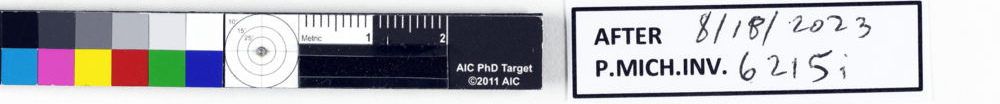
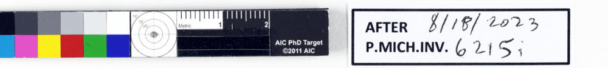

01 / 2005Small scale
Kushel and Chen publish two compact plates for 35 mm photographs of small daguerreotypes.Their dimensions: 71 × 16 mm and 51 × 12 mm. The stated purpose: preserve image area. Inner marks are my schematic.
The calibration strip at the edge of the papyrus is not an interruption. Its narrowness was part of the design brief.
Kushel and Chen publish two compact plates for 35 mm photographs of small daguerreotypes.Their dimensions: 71 × 16 mm and 51 × 12 mm. The stated purpose: preserve image area. Inner marks are my schematic.
Kushel, Chen, and Casella describe a four-size family, three formats for very small subjects and one for larger works.On the large format, the reference section is 26 × 3 cm; a typical 18 cm more holds date and ID.
AIC announces the targets for sale, designed by Kushel, Chen, and Casella; Robin Myers Imaging produced them.This establishes the named design and a production event, not the manufacture date of every photographed target.

Published with the recto and verso photographs of P.Mich. inv. 6215i.The dates describe publications and image use; they do not trace this plate back to a specific 2005 or 2008 template.

The earlier instructions make the strip read differently. In 2005, two of the later designers already describe the problem of fitting photographic references around small objects while leaving the photograph large. In 2008, three authors explain the linear format and its parts: gray and color patches, a light indicator, a size scale, and space for date and identification. The 2011 AIC announcement marks the fully assembled target as a product.
I drew the diagrams from descriptions and dimensions; they are not facsimiles. Their widths are independently enlarged, except that each outlined plate keeps its stated proportions. The documents show related design intentions and overlapping authorship. They do not establish that the target beside this papyrus descends from either earlier plate, or that it is the same physical target seen with the kylix.
Dan Kushel and Jiuan-jiuan Chen, “Small Scale Reference Plates for Photodocumentation,” instructions reprinted in WAAC Newsletter 27, no. 2 (May 2005), pp. 11–12. Newsletter PDF ↗
Dan Kushel, Jiuan-jiuan Chen, and Luisa Casella, “A Photographic Reference Plate for Conservation Documentation” (2008), pp. 1–3. Authors’ instructions ↗ · American Institute for Conservation, “AIC PhotoDocumentation Targets … on Sale!” (31 August 2011). Announcement ↗
Papyrus photographs: Maria Nowak and W. Graham Claytor, “A Local Will with a ‘Codicillary’ Clause,” Pylon 4 (2023), figs. 1–2; University of Michigan Library Digital Collections, CC BY-NC-SA 4.0. Crops rotated and resized for this work, not color-corrected. Article ↗